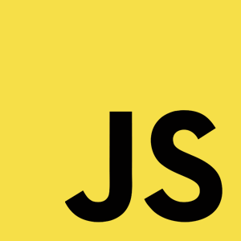
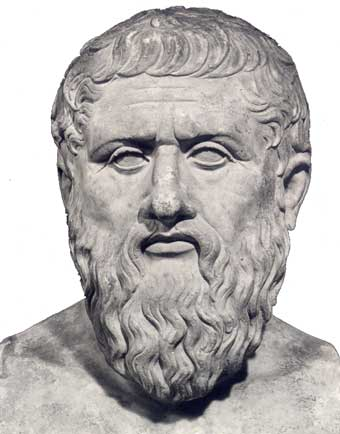

Al Curso de Diseño y Programación Web de Bextlán
Un especial agradecimiento a
TOD@S USTEDES QUE HAN DEPOSITADO SU CONFIANZA EN ESTE CURSO
por @jonmircha fundador de @bextlan


Ing. en Sistemas
Mtro. en Comunicación con Medios Virtuales
Creativo de la Web - Docente Digital - Frontend
Maratonista
La gente cree que programar es dificil, algunas razones:
JavaScript es el lenguaje de programación frontend de la web.
Es el más popular en Internet, y trabaja en todos los principales navegadores, como Internet Explorer, Firefox, Chrome, Opera, Safari y móviles.
Se utiliza en miles de millones de sitios web para agregar funcionalidad, validar formularios, comunicarse con el servidor, entre otras cosas.
Y algo más...
Es un lenguaje interpretado, es decir, no necesita compilar para ejecutarse.
Se define como orientado a objetos, basado en prototipos, no tipado y dinámico.
Todo el mundo puede usarlo sin necesidad de adquirir una licencia
JavaScript fue inventado por Brendan Eich de Netscape en 13 DÍAS
Apareció con Navigator 2.0, y desde entonces (1996) en todos los navegadores.
La POO trata de plasmar o representar
la realidad del mundo físico (lo concreto)
y llevarlo al mundo digital (lo abstracto)
Platón primer programador POO
Decía que vivimos en el mundo de las ideas, y los objetos son representaciones físicas de esa idea.
Class Perro(){ ... }kEnAi = new Perro();kEnAi.ladrar(); kEnAi.comer("croqueta");kEnAi.raza = "zorrito firefox"; kEnAi.edad=2; kEnAi.entrenado=true;Class Perro(){...}kenai = new Perro();Los objetos tienen 2 facultades
kenai.comer("croqueta"); kenai.ladrar();
function ladrar(){...}
function comer(comida){...}
kenai.raza="Criollo"; kenai.sexo = "Macho"; kenai.edad=2; kenai.tamanio = "Mediana"; kenai.adiestrado=true; kenai.esterilizado = true;
var raza = "Firefox";
JavaScript trabaja con Camel Case
(Técnica del Camello)
j@bextlan.com
#bextlanweb